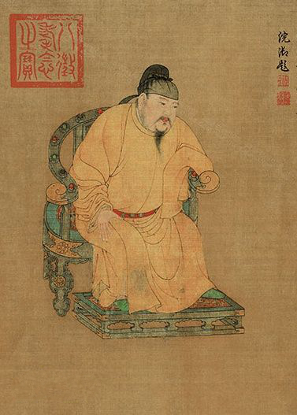
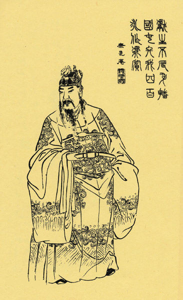
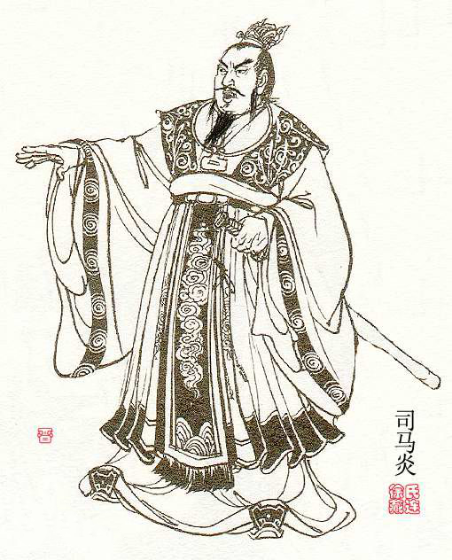
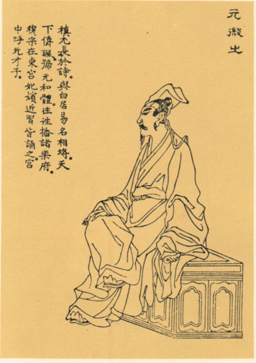
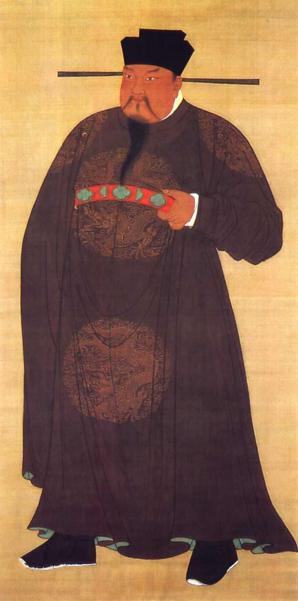
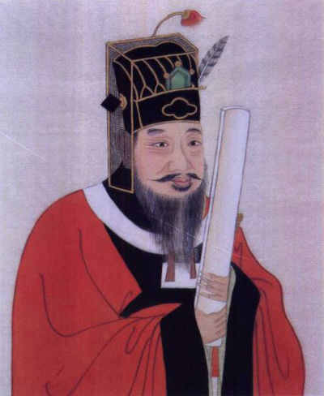

李隆基
唐玄宗李隆基（685年9月8日—762年5月3日）， 唐高宗与武则天之孙，唐睿宗李旦第三子，故又称李三郎，母窦德妃。 先天元年（712年）至天宝十五载（756年）在位， 因安史之乱退位为太上皇，是唐朝在位最长的皇帝，亦是唐朝极盛时期的皇帝。
唐垂拱元年（685年）八月，李隆基生于东都洛阳。生性英明果断、多才多艺。 通晓音律，仪表雄伟俊丽。初封楚王，后改封临淄王，历任卫尉少卿、潞州（今山西长治）别驾。 唐隆元年（710年）六月庚子日申时，李隆基与太平公主联手发动“唐隆政变”，诛杀韦后集团。先天元年（712年）， 李旦禅位于李隆基，李隆基于长安太极宫登基称帝 。唐玄宗在位前期，在政治上很有作为。他勤于政事，从各方面采取措施，巩固和发展了唐朝政权。 唐玄宗注意拨乱反正，任用姚崇、宋璟等贤相，励精图治，开创了唐朝的极盛之世——开元盛世。 但是在位后期逐渐怠慢朝政、宠信奸臣李林甫、杨国忠等；且宠爱杨贵妃， 加上政策失误和重用安禄山等塞外民族试图来稳定唐王朝的边疆，结果导致了后来长达八年的安史之乱， 埋下了唐朝中衰的伏笔。天宝十五载（756年）太子李亨即位，尊其为太上皇。
宝应元年（762年）病逝于长安神龙殿，终年78岁，葬于金粟山，名为泰陵。 庙号玄宗，又因其谥号为至道大圣大明孝皇帝，清朝为避讳康熙帝之名玄烨，多称其为唐明皇， 另有尊号开元圣文神武皇帝。